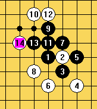

求八卦阵的要领
#1 求八卦阵的要领 作者：astro 发表时间：2007-3-26 21:51:30
我后手怕对方花月开局来梅花阵。我受不了，据说八卦阵可以……
我想学学
#2 Re:求八卦阵的要领 作者：xr__ 发表时间：2007-3-26 22:13:12
必胜局，是没办法的除非用带交换的开局！
#3 Re:求八卦阵的要领 作者：astro 发表时间：2007-3-26 22:27:32
哦
刚才我试过了……
无禁手就只能这样么?
#4 Re:求八卦阵的要领 作者：海天涯 发表时间：2007-4-20 20:49:10
我感觉八卦阵只能对付不懂八卦阵的人,懂的似乎一下就能破了
#5 Re:Re:求八卦阵的要领 作者：zwzzww 发表时间：2007-4-21 10:54:17
引用：我也有同感，但这么防好像可以吧？
原文由 海天涯 发表于 2007-4-20 20:49:10 :我感觉八卦阵只能对付不懂八卦阵的人,懂的似乎一下就能破了